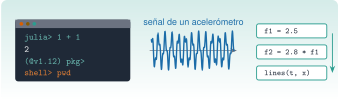
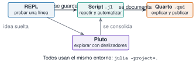
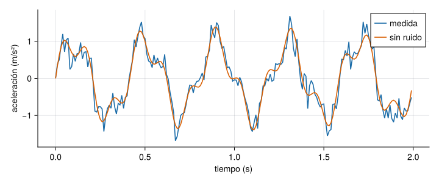

Ver el código
VERSIONv"1.12.3"J1.1 · Nivel J1 · Julia esencial

Todo lo que viene después en el curso (señales, modos, identificación) se programa en Julia. Esta unidad deja listo el puesto de trabajo: Julia instalado y actualizable, un REPL que sepas manejar, un editor cómodo y la idea clara de dónde se ejecuta qué. Al final habrás generado y dibujado tu primera señal de vibración.
Tiempo orientativo: 60 minutos. Objetivos y prerrequisitos (3), teoría en cinco píldoras (12), práctica guiada (25), «Pídeselo a Claude» (8), ejercicios (10) y cierre (2). Las pestañas Python de la práctica no se ejecutan en la web: su versión probada está en la carpeta python/ de la unidad.
Objetivos. Al terminar esta unidad sabrás:
juliaup, comprobar la versión y cambiar de versión;julia --project=. y explicar por qué se usa siempre esa opción;Prerrequisitos. Ninguno. Conviene haber usado una terminal alguna vez; si no, C2 la explica desde cero.
Reparto con otras unidades. Aquí se instala y se explora. El gestor de paquetes y los ficheros Project.toml y Manifest.toml se explican en J1.2; el lenguaje en sí empieza en J1.3.
juliaupjuliaup es el instalador y gestor de versiones oficial. Instala Julia, lo mantiene actualizado y permite tener varias versiones a la vez, que es lo que necesitamos para comprobar que el código funciona en la versión estable y en la de soporte largo (LTS).
juliaup
Dentro de Julia, VERSION devuelve la versión en uso:
Instalar Julia desde un gestor de paquetes del sistema suele dar una versión antigua y sin forma sencilla de cambiarla. Usa juliaup (en Windows, desde la tienda de Microsoft o con winget; en macOS y Linux, con el script de instalación de la página oficial de Julia).
Con juliaup se pueden tener instaladas a la vez Julia 1.10 y Julia 1.12 y elegir cuál arrancar.
Verdadero. juliaup add 1.10 instala la versión LTS junto a la de por defecto y julia +1.10 la arranca sin cambiar el valor por defecto.
El REPL (read–eval–print loop) es la consola de Julia: escribes una expresión, Julia la evalúa y muestra el resultado. Se cambia de modo con la primera tecla de una línea vacía, y se vuelve al modo normal con la tecla de retroceso:
| Se escribe | Modo | Prompt | Para qué sirve |
|---|---|---|---|
| (nada) | Julia | julia> |
evaluar código |
? |
Ayuda | help?> |
documentación de una función: ?rms |
; |
Shell | shell> |
comandos del sistema sin salir: pwd, ls |
] |
Paquetes | (@v1.12) pkg> |
instalar y activar entornos (se verá en J1.2) |
Tres trucos que ahorran mucho tiempo: la flecha arriba recupera la historia, el tabulador completa nombres y ans guarda el último resultado. Además, el tabulador convierte secuencias de LaTeX en símbolos: \omega + tabulador da ω y \zeta + tabulador da ζ, que son los nombres que usa el curso para la frecuencia angular y el amortiguamiento.
15.708¿Qué valor da 2π * 2.5 en rad/s?
\(2\pi\cdot2{,}5\approx15{,}708\) rad/s (se comprueba en el REPL).
--project=.Un script es un fichero .jl que se ejecuta de principio a fin y da siempre el mismo resultado, que es lo que queremos para un cálculo que se repite. Se lanza desde la terminal, en la raíz del repositorio:
La opción --project=. le dice a Julia que use el entorno del proyecto (la lista de paquetes y versiones del curso, ficheros Project.toml y Manifest.toml) y no el entorno personal de quien lo ejecuta. Sin ella, el mismo script puede funcionar en un ordenador y fallar en otro por una versión distinta de un paquete. Dentro de un script, @__DIR__ da la carpeta del propio fichero, y con joinpath se construyen rutas que no dependen de desde dónde se lance.
julia script.jl y julia --project=. script.jl usan siempre los mismos paquetes y las mismas versiones.
Falso. Sin --project=. se usa el entorno por defecto de cada usuario; con la opción, el del proyecto. Por eso en el curso se escribe siempre --project=..
VS Code, con la extensión oficial de Julia, es el editor recomendado. Aporta coloreado, ayuda al pasar el ratón, navegación a la definición y un REPL integrado. El flujo de trabajo es: abrir la carpeta del repositorio (no un fichero suelto, para que encuentre el entorno), arrancar el REPL con la orden Julia: Start REPL y ejecutar la línea o la selección con Mayús + Intro. Sirve cualquier otro editor, pero la extensión de VS Code es la que ofrece más ayuda.
Pluto.jl es un cuaderno en el que cada celda es una expresión y, cuando cambias una variable, se recalculan automáticamente todas las celdas que dependen de ella. Es muy cómodo para probar un deslizador o ver qué pasa al variar un parámetro. En este curso se usa solo para explorar; lo que se publica y se verifica son las páginas de Quarto, que ejecutan Julia al compilar.

Se prueba en el REPL, se guarda en un script y se explica en Quarto. Los tres usan el mismo entorno (--project=.), y por eso el resultado es el mismo en cualquier ordenador.
Para cada tarea, di si usarías el REPL, un script, Pluto o Quarto: (a) comprobar qué devuelve sqrt(-1); (b) procesar cada noche los registros del día; (c) ver cómo cambia un espectro al mover el amortiguamiento; (d) entregar un informe con código y figuras.
Vamos a generar la señal que un acelerómetro mediría en un edificio con dos modos: uno de 2,5 Hz y otro, más débil, de 7 Hz, con algo de ruido. Es el mismo tipo de señal que se analizará en M3. Se fija la semilla para que cualquiera obtenga exactamente los mismos números.
Paso 1. Crear la señal. 1000 muestras a 100 Hz son 10 s. Todas las magnitudes en unidades del SI (tiempo en s, aceleración en m/s²).
Random.seed!(1)
fs = 100.0 # frecuencia de muestreo, Hz
T = 10.0 # duración, s
t = (0:Int(fs * T) - 1) ./ fs # vector de tiempos, s
limpia = sin.(2π * 2.5 .* t) .+ 0.4 .* sin.(2π * 7.0 .* t)
x = limpia .+ 0.2 .* randn(length(t)) # con ruido
(muestras = length(x), rms_limpia = round(sqrt(mean(abs2, limpia)), digits=4),
rms_con_ruido = round(sqrt(mean(abs2, x)), digits=4))(muestras = 1000, rms_limpia = 0.7616, rms_con_ruido = 0.7731)El valor eficaz (RMS) de la señal limpia es \(\sqrt{(1^2+0{,}4^2)/2}\approx0{,}7616\) m/s², y el ruido lo sube ligeramente. El punto delante de un operador (.*, .+) y detrás de una función (sin.) significa «elemento a elemento»; se explica en J1.5.
Paso 2. Dibujarla. Las figuras de la web se hacen con CairoMakie y el tema del curso.

Paso 3. Guardarlo como script. Cuando la prueba funciona en el REPL, se copia a un fichero. Si lo guardas como scripts/primera_senal.jl, lo lanzas con julia --project=. scripts/primera_senal.jl.
La versión equivalente, probada con pytest, está en python/senal.py. El entorno se gestiona con uv (no se usa conda):
La parte determinista coincide con la de Julia al detalle (la prueba lo comprueba). El ruido no se compara: los generadores aleatorios de Julia y de NumPy son distintos aunque se fije la semilla.
Una señal con semilla fija, su valor RMS comprobado a mano y una figura con unidades en los ejes. Es la receta de todo el curso: datos con semilla, valor numérico comprobado, figura con unidades y pie.
«Estoy en la raíz del repositorio resonancia. Con Julia y --project=.: (1) dime qué versión de Julia hay y si coincide con la de juliaup status; (2) crea scripts/primera_senal.jl que genere una señal de 10 s a 100 Hz con dos senoides de 2,5 Hz y 7 Hz (amplitudes 1 y 0,4) y ruido gaussiano de desviación 0,2 con semilla 1, e imprima su RMS; (3) ejecútalo y dime el resultado. No instales ni actualices ningún paquete. Si algo falla, dímelo en vez de inventar el resultado.»
Verifica. (a) Que el comando usa --project=.. (b) Que el RMS de la señal sin ruido sale \(0{,}7616\), que es lo que se calcula a mano con \(\sqrt{(1+0{,}16)/2}\). (c) Que la semilla está fijada antes de randn. (d) Que no ha modificado Project.toml ni Manifest.toml (míralo con git diff). (e) Que el tiempo está en segundos y que el eje de la figura, si la hace, lleva unidades.
Una señal de 10 s muestreada a 100 Hz, ¿cuántas muestras tiene?
\(N=f_s\,T=100\cdot10=1000\) muestras (en Julia, Int(fs * T)).
Escribe una expresión de Julia que dé el valor RMS del vector [3, 4]. Indica el resultado.
El RMS es la raíz cuadrada de la media de los cuadrados: mean(abs2, x) calcula esa media (hace falta using Statistics).
sqrt(mean(abs2, [3, 4])) da \(\sqrt{12{,}5}\approx3{,}5355\).
Explica con tus palabras por qué se fija la semilla del generador aleatorio en todos los ejemplos del curso.
julia --project=. fichero.jl y sé explicar para qué sirve --project=..Cierre. Responde por escrito en tres líneas: qué he entendido, qué todavía no domino y cuál es mi siguiente paso pequeño. Si has usado a Claude, revisa con git diff lo que ha cambiado antes de aceptarlo.
Siguiente: J1.2 · Paquetes y reproducibilidad.